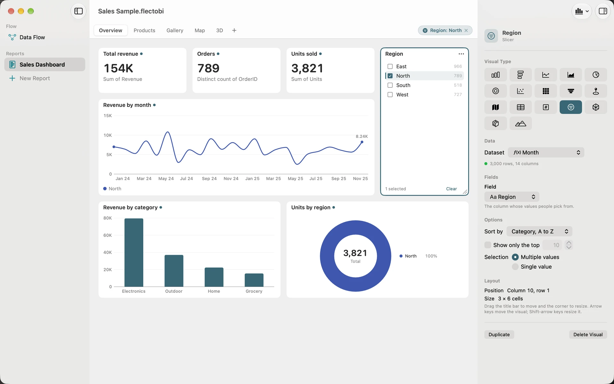

Selections and Slicers
A Report is more useful when you can ask it questions. Which region sold the most? What does this one product look like on its own? In FlectoBI you ask by choosing a Value. Everything else on the Page answers.
A Selection is the set of Values you have chosen, either in a Slicer or by clicking a Visual. This page explains how Selections filter your Page, and when they do not.
Two ways to make a Selection
Use a Slicer
A Slicer lists the Values of one Column, with a tick beside each. Add one with Add Visual > Slicer, then choose its Field.
- Tick a Value to choose it. Tick more to choose several.
- Use the Search field to find a Value in a long list.
- Press Clear to remove the choice.
In the inspector, the Selection option sets Multiple values or Single value. A Slicer lists up to 1,000 Values.

A Slicer is not filtered by Selections on its own Column, so every Value stays in the list. A Value that is chosen somewhere else, such as on a chart, is marked with an accent bar. A pick in the Slicer replaces other Selections on that Column.
Click a chart
Click a mark to choose its Value: a column, a slice, a point, a place on a map, or a funnel stage. Other marks fade, so you can see what you chose. Click the same Value again to clear it.
To choose more than one, Command-click each mark. Command-click a chosen mark to remove it.
A Heatmap cell chooses both its row Value and its column Value. Click a row label or a column label to choose the whole row or column. Tables and Cards do not make Selections.
What gets filtered
A Selection filters every other Visual on the same Page, if that Visual’s Dataset has a Column with the same name and a comparable type.
This rule has useful consequences:
- A Slicer on Region filters any Visual whose Dataset has a Region Column, even if the Visuals read different Steps.
- A Visual with no Region Column is left alone. It does not go blank.
- A Selection affects only its own Page. Other Pages are not filtered.
- Matching is by name, so name your Columns the same way in every Step that feeds a Report.
A caution: two Datasets that happen to share a generic Column name, such as “Name” or “ID”, filter each other, even if they mean different things. If a Visual changes when you did not expect it to, check the Column names. A later version may add a switch for a Visual to ignore Selections.
Dates
Dates group by the finest period that fits: minute, hour, day, week, month, quarter or year. Weeks start on Monday. Clicking a month chooses that whole month.
See what is filtering
When a Selection is active, a chip appears at the top of the Page. It shows a summary, such as “Region: North”, “Region: 2 values” or “3 filters”, and an ×. Each filtered card also shows a small dot after its title. Hold the pointer over the dot to read “Filtered by” and the Column’s name.
Click the chip, or press Esc, to clear every Selection on the Page.
You can also clear one Visual’s Selection from its Visual options menu with Clear Selection.
What is saved
The choices a Slicer holds are saved in the Workbook. When you reopen it, the Slicer is as you left it. Clicks on chart marks are not saved, and neither is turning a 3D view. They are about looking at the data, not about changing the Report.
Use the keyboard
Every Selection can be made without a mouse.
- Press Tab to select a Visual on the Page.
- Press Option-Right or Option-Down to select the next category in a chart. Press Option-Left or Option-Up for the previous one. After the last category, it wraps around.
- Press Esc to clear.
VoiceOver announces the result, for example “Filtered by North”.
If you prefer menus, open a card’s Visual options menu and choose Filter By. It lists Values, up to 100, and it does the same thing as a Command-click. When there are more, it says how many more and suggests a Slicer.
See Keyboard and accessibility for every shortcut.
When nothing shows
If a Selection leaves a Visual without data, you will see a short message instead of an empty chart: “No data matches the current selection.” or “No rows match the current selection.” Clear the Selection to bring the Visual back.